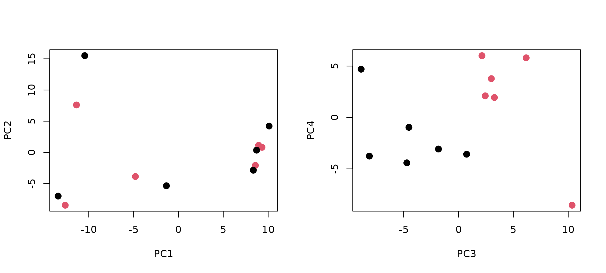

XCMSのドキュメント「LCMS data preprocessing and analysis with xcms」の(かなりの)簡略版
faahKOパッケージには，ポジティブイオンモードのNetCDFファイルが含まれており， まずはじめにこのファイルを読み込む．
library(xcms)
library(faahKO)
## load raw data
cdfs <- dir(system.file("cdf", package = "faahKO"), full.names = TRUE, recursive = TRUE)
cdfs## [1] "/usr/local/lib/R/site-library/faahKO/cdf/KO/ko15.CDF"
## [2] "/usr/local/lib/R/site-library/faahKO/cdf/KO/ko16.CDF"
## [3] "/usr/local/lib/R/site-library/faahKO/cdf/KO/ko18.CDF"
## [4] "/usr/local/lib/R/site-library/faahKO/cdf/KO/ko19.CDF"
## [5] "/usr/local/lib/R/site-library/faahKO/cdf/KO/ko21.CDF"
## [6] "/usr/local/lib/R/site-library/faahKO/cdf/KO/ko22.CDF"
## [7] "/usr/local/lib/R/site-library/faahKO/cdf/WT/wt15.CDF"
## [8] "/usr/local/lib/R/site-library/faahKO/cdf/WT/wt16.CDF"
## [9] "/usr/local/lib/R/site-library/faahKO/cdf/WT/wt18.CDF"
## [10] "/usr/local/lib/R/site-library/faahKO/cdf/WT/wt19.CDF"
## [11] "/usr/local/lib/R/site-library/faahKO/cdf/WT/wt21.CDF"
## [12] "/usr/local/lib/R/site-library/faahKO/cdf/WT/wt22.CDF"
raw_data <- readMSData(files = cdfs, mode="onDisk")データを読み込んだ後，ピークを拾い上げる処理であるピークピッキングを行う．ここでは，CentWaveと呼ばれるウェーブレット変換を用いた方法を用いている．
ピークピッキングのパラメーターはCentWaveParam関数で設定される．パラメーターの値は，XCMSのドキュメントに記載されたものをそのまま利用しているが，実際は試行錯誤で決定する必要がある
cwp <- CentWaveParam(peakwidth = c(20, 80), noise = 5000, prefilter = c(6, 5000))
xdata <- findChromPeaks(raw_data, param = cwp)次に，クロマトグラムのアライメントと呼ばれる処理を行う．例として，保持時間が2760秒から2820秒までのtotal ion chromatogramを確認すると，以下に示すようにサンプル間で保持時間のズレが生じていることがわかる．
tic <- chromatogram(xdata, aggregationFun="sum")
plot(tic,xlim=c(2760,2820), peakType="none")そこで，クロマトグラムの保持時間の補正をObiwarp法を用いて行った結果を次に示す．
xdata <- adjustRtime(xdata, param = ObiwarpParam(binSize = 0.6))
tic <- chromatogram(xdata, aggregationFun="sum")
plot(tic,xlim=c(2760,2820), peakType="none")この結果より，補正前に比べてサンプル間の保持時間のズレが小さくなっていることが確認できる． クロマトグラムのアライメントのパラメーターの値は，ピークピッキングと同様にXCMSのドキュメントに記載されたものを そのまま利用しているが，クロマトグラムの保持時間のズレ方は分析法によって異なることから，実際は試行錯誤で決める必要がある．
次に，それぞれのサンプル間でのピークを対応付けをgroupChromPeaks関数を用いて行う． PeakDensityParamはこれまでと同様に，パラメーターを変えながら試行錯誤で決める必要がある．
## Group Peaks
sample_group <- c(1,1,1,1,1,1,1,1,1,1,1,1)
#sample_group <- cdfs
pdp <- PeakDensityParam(sampleGroups = sample_group, minFraction = 0.4, bw = 30)
xdata <- groupChromPeaks(xdata, param = pdp)sampleGroupsはここでは全て1のベクトルを設定したが，例えば以下
sample_group <- c(“KO”, “KO”, “KO”, “KO”, “KO”, “KO”, “WT”, “WT”, “WT”, “WT”, “WT”, “WT”)
のように，群毎に設定しても良い．
ここまでの処理によって，各ピークとサンプルのデータ行列が作られ，次のようになっている．
head(featureValues(xdata))## ko15.CDF ko16.CDF ko18.CDF ko19.CDF ko21.CDF ko22.CDF wt15.CDF
## FT001 1924712.0 1757151.0 1714581.8 1220358.1 1383416.7 1180288.2 2129885.1
## FT002 213659.3 289500.7 194603.7 NA NA 178285.7 253825.6
## FT003 349011.5 451863.7 337473.3 NA 343897.8 208002.8 364609.8
## FT004 286221.4 NA 364299.5 NA 164009.0 149097.6 255697.7
## FT005 762727.3 NA 1345515.1 608016.5 380970.3 588986.4 1286883.0
## FT006 NA 235308.8 246563.6 NA NA NA 229292.1
## wt16.CDF wt18.CDF wt19.CDF wt21.CDF wt22.CDF
## FT001 1634342.0 1810112.28 1507943.1 1623589.2 1354004.9
## FT002 241844.4 228501.09 216393.1 240606.0 185399.5
## FT003 360908.9 54566.86 NA NA 221937.5
## FT004 311296.8 NA NA 366441.5 271128.0
## FT005 1739516.6 NA 214367.8 639755.3 508546.4
## FT006 135905.0 143917.91 NA NA NANAは欠損ピークである。欠損ピークは、再度測定データを確認して、実際にピークが存在するかどうか確認する必要がある。
xdata <- fillChromPeaks(xdata, param = ChromPeakAreaParam())
head(featureValues(xdata))## ko15.CDF ko16.CDF ko18.CDF ko19.CDF ko21.CDF ko22.CDF wt15.CDF
## FT001 1924712.0 1757151.0 1714581.8 1220358.1 1383416.7 1180288.24 2129885.1
## FT002 213659.3 289500.7 194603.7 154926.8 169833.5 178285.70 253825.6
## FT003 349011.5 451863.7 337473.3 107086.6 343897.8 208002.80 364609.8
## FT004 286221.4 293386.9 364299.5 210147.4 164009.0 149097.55 255697.7
## FT005 762727.3 885092.7 1345515.1 608016.5 380970.3 588986.38 1286883.0
## FT006 210804.9 235308.8 246563.6 103647.6 117760.3 71298.51 229292.1
## wt16.CDF wt18.CDF wt19.CDF wt21.CDF wt22.CDF
## FT001 1634342.0 1810112.28 1507943.1 1623589.2 1354004.93
## FT002 241844.4 228501.09 216393.1 240606.0 185399.47
## FT003 360908.9 54566.86 174070.9 232554.2 221937.53
## FT004 311296.8 255216.99 132769.2 366441.5 271128.02
## FT005 1739516.6 872221.89 214367.8 639755.3 508546.42
## FT006 135905.0 143917.91 118929.2 105907.5 85332.36欠損ピークの穴埋めを行った後で、それでも欠損値になっていれば0を埋める
data <- t(featureValues(xdata, value="into")) # sample*peak
# 行名と列名は付けるほうが良い
data[is.na(data)] <- 0最後に主成分分析を行ってデータを可視化する。
pca <- prcomp(data,scale=TRUE)
class <- c(2,2,2,2,2,2,1,1,1,1,1,1)
par(mfrow=c(1,2))
plot(pca$x, col=class, pch=16, cex=1.5) # PC1 vs PC2
plot(pca$x[,3:4], col=class, pch=16, cex=1.5) # PC3 vs PC4
黒丸がWild type，赤丸がKnock outマウスを表している．
主成分分析の結果より，PC1とPC2で群間差は確認できなかったが、PC3で群間差を確認することが出来た。
全体を通して，xcmsではピークピッキング，クロマトグラムのアライメント，ピークの対応付けの各ステップで，複数のパラメーターを設定する必要があることがわかる．xcmsのパラメーターをチューニングするためのBioconductorパッケージとしてIPOやAutoTunerがある． 一方で，Lassenら(https://doi.org/10.1021/acs.analchem.1c02000)は，LC-MSの専門家がマニュアルで選んだパラメーターが最も良い結果であったと報告している．